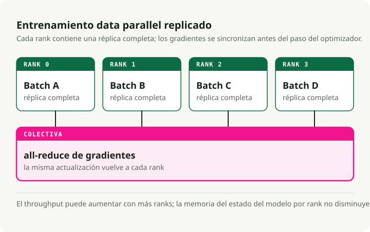
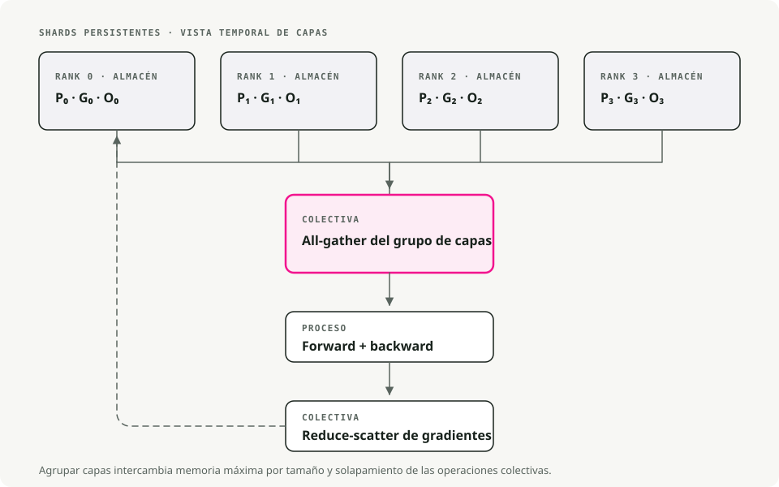
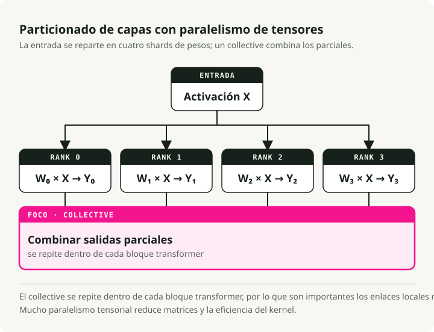
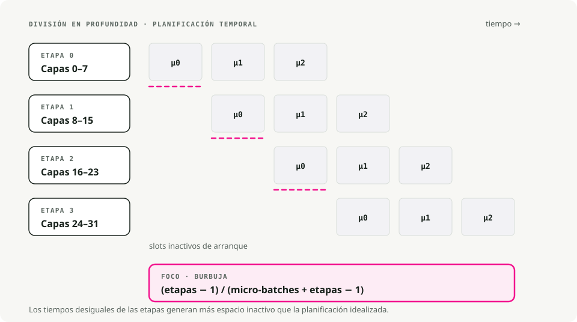
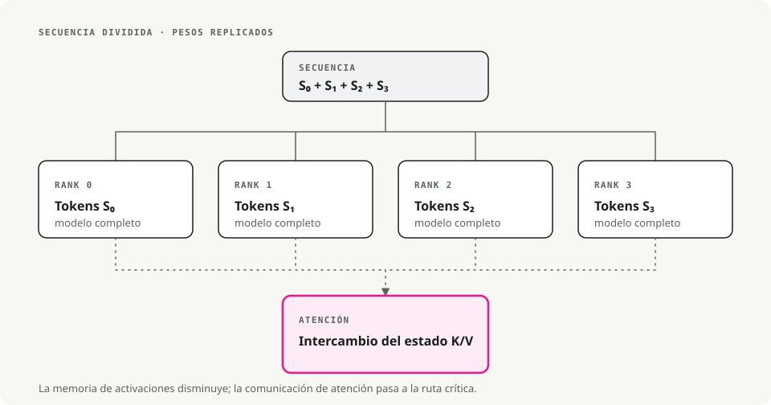
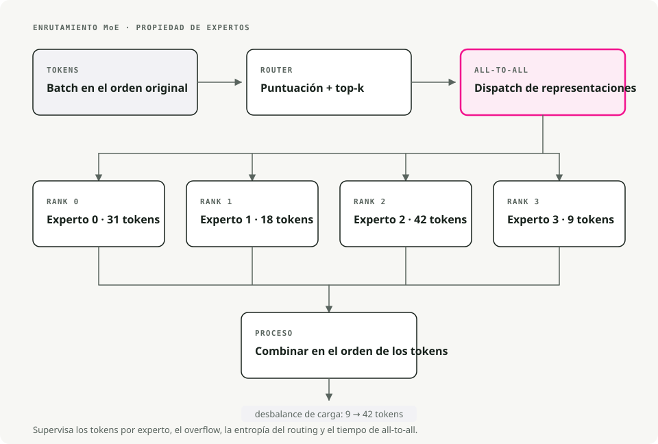
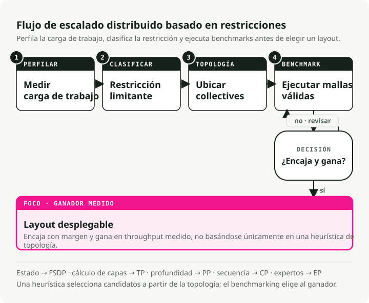

Traducción automática
Este artículo se tradujo automáticamente a partir de la versión original en inglés.
Escalado de modelos de lenguaje grandes: estrategias multi-GPU y multi-nodo que funcionan en la práctica
Los LLM actuales no caben en una sola GPU. Un modelo de 70B parámetros necesita unos 140GB solo para los pesos en FP16, casi el doble de lo que admite una A100. Entrenar o servir estos modelos implica dividir el trabajo entre varias GPUs, y hacer mal esa división desperdicia la mayor parte de tu presupuesto de cómputo.
Este es un recorrido práctico por las estrategias de paralelismo que de verdad funcionan en producción, basado en la Ultra-Scale Playbook de Hugging Face.
Requisitos previos
Le sacarás más partido a esto si ya te manejas con:
- Backpropagation, gradientes y optimizadores como AdamW.
- Mecánica de los transformers: atención y redes feed-forward.
- Fundamentos de PyTorch:
nn.Module,DataLoader, el bucle de entrenamiento estándar.
Por qué importa el escalado
Hay cuatro cosas que te sacan de una sola GPU. Un modelo de 70B necesita aproximadamente 140GB en FP16, casi el doble de los 80GB de una A100. Incluso con ocho A100, entrenar desde cero un modelo de 13B lleva semanas. Los contextos largos (32K tokens o más) superan la memoria de una sola GPU antes de que hayas hecho trabajo real. Y con carga de producción, la inferencia distribuida es lo que evita que la latencia de cola se dispare.
1. Técnicas de paralelismo, explicadas de forma simple
1.1 Paralelismo de datos (DP)
La división más simple. Cada GPU mantiene el modelo completo y procesa una porción distinta del batch. Tras el backprop, las GPUs hacen all-reduce de sus gradientes (promediándolos), y luego cada una actualiza su propia copia. Modelos idénticos, datos distintos, pesos sincronizados.
Úsalo cuando el modelo cabe cómodamente en una GPU y solo quieres procesar más batches por segundo. El coste de configuración es casi cero; DDP en PyTorch es un wrapper de una sola línea. La pega es la memoria: cada GPU sigue manteniendo el modelo completo, los estados del optimizador y los gradientes, así que compras throughput, no capacidad.

Herramientas: PyTorch DDP, Horovod.
1.2 Paralelismo de datos completamente fragmentado (FSDP)
DP, pero con memoria en mente. Los parámetros, gradientes y estados del optimizador se fragmentan entre GPUs. Durante el forward pass, cada GPU recopila de las demás los parámetros que necesita, computa y luego libera los fragmentos prestados para ahorrar memoria. En el backward pass se repite la recopilación, y después se reducen los gradientes para que cada GPU solo actualice su propio fragmento.
Esta es la capa a la que recurrir cuando el modelo ya ha superado una sola GPU (normalmente a partir de ~10B parámetros) y quieres seguir entrenando en una sola máquina sin reescribir tu código. En la práctica, FSDP te permite entrenar modelos 4–8× más grandes de lo que cabe en una GPU.

[!NOTE] Etapas de ZeRO, en breve FSDP suele describirse en términos de ZeRO (Zero Redundancy Optimizer):
- Stage 1: fragmenta solo los estados del optimizador (~4× de ahorro de memoria).
- Stage 2: fragmenta gradientes + estados del optimizador (~8× de ahorro de memoria).
- Stage 3: fragmenta parámetros + gradientes + estados del optimizador (escalado lineal con N GPUs).
PyTorch FSDP usa por defecto un comportamiento de Stage 3.
Activar FSDP en PyTorch
from torch.distributed.fsdp import FullyShardedDataParallel as FSDP
# 1. Wrap your model
model = MyLLM()
model = FSDP(model)
# 2. Train as usual
output = model(input)
loss = output.sum()
loss.backward()
optimizer.step()
Herramientas: PyTorch FSDP, DeepSpeed ZeRO-3.
1.3 Paralelismo tensorial (TP)
Divide capas individuales entre GPUs. Coge una matriz de pesos, divídela por columnas (o por filas), y dale a cada GPU una parte. Cada dispositivo calcula su parte de la salida; un all-reduce o una concatenación recompone los resultados antes de la siguiente capa. Esto ocurre en cada capa.
TP compensa cuando las capas individuales son demasiado grandes incluso después de FSDP: matrices de atención enormes o FFN muy anchas. También asume una interconexión intra-nodo rápida: NVLink o NVSwitch, no PCIe. Entre nodos, el all-reduce por capa se convierte en el cuello de botella y la ventaja desaparece. Un grado de TP de 2–8 dentro de una sola máquina suele ser el punto óptimo.

Herramientas: Megatron-LM, TensorRT-LLM, ColossalAI.
1.4 Paralelismo de pipeline (PP)
Divide el modelo verticalmente, por grupos de capas. Las capas 1–10 viven en la GPU 1, las capas 11–20 en la GPU 2, y así sucesivamente. Después, envía micro-batches por el pipeline para que cada etapa siga ocupada: la GPU 1 termina el batch 1 y se lo pasa a la GPU 2, y acto seguido empieza con el batch 2. Con suficientes micro-batches en vuelo, cada dispositivo está trabajando siempre en algo.
Recurre a PP cuando el modelo es tan profundo que ni siquiera FSDP puede alojarlo, o cuando necesitas abarcar varios nodos y el ancho de banda entre nodos es el factor limitante. La parte molesta son las “burbujas” del pipeline —etapas ociosas al principio y al final de cada batch—, que minimizas ejecutando muchos micro-batches pequeños en lugar de unos pocos grandes.

Herramientas: DeepSpeed PP, Megatron-LM, GPipe.
1.5 Paralelismo de contexto (CP)
Para secuencias muy largas. Divide un contexto de 64K tokens entre, por ejemplo, cuatro GPUs (16K tokens cada una). Cada GPU ejecuta self-attention sobre su bloque local, y luego las GPUs intercambian keys y values para calcular las partes de atención entre bloques. El resultado combinado es el mismo que obtendrías al ejecutar el contexto completo en un solo dispositivo, sin el coste de memoria.
Esta es la palanca que accionas cuando el cuello de botella es la longitud de contexto, no el tamaño del modelo: análisis de documentos largos, razonamiento sobre libros completos, generación de código sobre un repositorio grande. CP es lo que hace viable el entrenamiento con más de 100K tokens en hardware que, de otro modo, se quedaría en 8K.

Herramientas: Picotron, Nanotron.
1.6 Paralelismo de expertos (Mixture of Experts)
Especialización. Sustituye las capas FFN densas por N subredes expertas (8, 64, a veces más). Una pequeña red de gating elige los top-k expertos (normalmente top-2) para cada token. Solo esos expertos se ejecutan para ese token; el resto quedan inactivos. Distintos expertos pueden vivir en GPUs distintas, así que el modelo puede ser enorme en número total de parámetros mientras que el cómputo por token sigue siendo pequeño.
Mixtral-8x7B tiene 56B parámetros totales pero solo ~13B activos por token; Grok y DeepSeek-V2 usan el mismo truco. El precio es la complejidad del lado del entrenamiento: el balanceo de carga entre expertos es un problema de ingeniería en sí mismo, y la inestabilidad en el routing ha hecho divergir más de una ejecución de MoE.

Herramientas: Picotron, Nanotron.
Comparativa rápida: ¿qué paralelismo deberías usar?
| Técnica | Qué divide | Mejor para | Ahorro de memoria | Coste de comunicación |
|---|---|---|---|---|
| Paralelismo de datos (DP) | Batches de datos | Modelos que caben en 1 GPU | Ninguno (copia el modelo) | Bajo (solo gradientes) |
| FSDP | Modelo + optimizador + gradientes | Modelos demasiado grandes para 1 GPU | Alto (4–8×) | Medio |
| Paralelismo tensorial (TP) | Capas individuales | Capas enormes, GPUs rápidas | Medio | Alto (por capa) |
| Paralelismo de pipeline (PP) | Grupos de capas (etapas) | Modelos muy profundos | Medio | Bajo (entre etapas) |
| Paralelismo de contexto (CP) | Longitud de secuencia | Contextos largos (64K+ tokens) | Alto (para activaciones) | Medio |
| Paralelismo de expertos (MoE) | Expertos en capas MoE | Modelos dispersos masivos | Ninguno (más parámetros, menos FLOPs) | Medio |
Un valor por defecto razonable: empieza con FSDP. Añade TP cuando las capas individuales sigan siendo demasiado grandes. Añade PP cuando necesites abarcar varios nodos. Añade CP cuando el cuello de botella sea la longitud de contexto.
2. Estrategias prácticas de entrenamiento
Distintas configuraciones de hardware requieren combinaciones distintas. Esto es lo que yo haría realmente en tres casos habituales.
2.1 Una sola máquina, 2–8 GPUs
Usa primero FSDP puro —PyTorch FSDP o DeepSpeed ZeRO-2/ZeRO-3—, apoyado en Hugging Face accelerate o torchrun. Si las capas individuales de atención o FFN siguen siendo demasiado grandes después del fragmentado, añade TP=2.
Algunas notas específicas de hardware. Las GPUs de consumo (RTX 4090 y similares) sobre PCIe deberían quedarse en TP=1 o como mucho TP=2; la interconexión no da para más. Las GPUs de servidor (A100, H100) con NVLink manejan bien TP=2 a TP=4. Y con ocho GPUs en una sola máquina, FSDP puro suele manejar modelos de hasta 70B sin necesitar TP en absoluto.
2.2 Clúster pequeño, 2–16 nodos (≤128 GPUs)
Aquí quieres paralelismo 2D o 3D: TP más FSDP, opcionalmente más PP. La forma que funciona en la práctica:
- TP dentro de cada nodo (TP=4 o TP=8 con NVLink).
- FSDP entre nodos para el paralelismo de datos.
- Añade PP si el modelo es tan profundo que ni siquiera FSDP puede alojarlo, dividiéndolo verticalmente entre nodos.
La razón por la que esta disposición funciona: NVLink es lo bastante rápido para manejar el tráfico por capa de TP, mientras que InfiniBand entre nodos solo tiene que sincronizar los fragmentos de FSDP, lo cual es una comunicación mucho más barata. Efecto neto: minimizas el ancho de banda entre nodos, que casi siempre es el cuello de botella a esta escala.
Cuando sí añadas PP, fija el número de micro-batches en al menos 4× el grado del pipeline. Con menos que eso, las burbujas se comen tu throughput.
2.3 Clúster grande (cientos a miles de GPUs)
Aquí es donde el paralelismo 4D (DP × TP × PP × CP) empieza a tener sentido. Asigna cada dimensión a tu topología de hardware y usa Megatron-LM o Nanotron: admiten 4D de serie, y montarte tu propia solución es un proyecto en sí mismo.
Siendo realistas, esto solo lo necesitas cuando estás preentrenando desde cero modelos de 70B+ con ventanas de contexto de 32K+ tokens. La mayoría de los fine-tuning, incluso de modelos grandes, no lo necesitan.
Un ejemplo concreto. Entrenar un modelo de 70B con contexto de 32K en 512 GPUs:
- TP=8 dentro de cada nodo de 8 GPUs.
- PP=4 entre cuatro nodos.
- CP=4 para el contexto largo.
- DP=4 para throughput.
- 8 × 4 × 4 × 4 = 512 GPUs.
La eficiencia de escalado en una configuración así se sitúa alrededor del 70–80% con buen InfiniBand, y puedes empujarla hasta ~85% con un ajuste fino cuidadoso. Cualquier cifra por debajo de eso significa que estás dejando dinero de verdad sobre la mesa.
3. Herramientas que merece la pena aprender
Una chuleta rápida para elegir la adecuada:
| Herramienta | Cuándo usarla | Curva de aprendizaje | Mejor para |
|---|---|---|---|
| Hugging Face Accelerate | Cualquier entrenamiento distribuido con cambios mínimos de código | ★☆☆☆☆ | Principiantes, prototipos rápidos |
| PyTorch FSDP | Modelos medianos y grandes (1–30B) en un solo nodo | ★★☆☆☆ | El caso más habitual |
| DeepSpeed ZeRO | Entrenamiento multi-nodo con buena documentación | ★★★☆☆ | Entrenamiento en producción |
| Megatron-LM | Modelos muy grandes (70B+), paralelismo 3D/4D | ★★★★☆ | Producción a escala |
| Nanotron | Aprendizaje e investigación en paralelismo moderno | ★★★☆☆ | Educación, experimentación |
| vLLM | Inferencia rápida con PagedAttention y caché KV | ★★☆☆☆ | Serving en producción |
| TensorRT-LLM | Máxima velocidad de inferencia en GPUs NVIDIA | ★★★★☆ | Optimización de inferencia en producción |
Configuración mínima de FSDP para accelerate
compute_environment: LOCAL_MACHINE
distributed_type: FSDP
fsdp_config:
fsdp_auto_wrap_policy: TRANSFORMER_BASED_WRAP
fsdp_backward_prefetch: BACKWARD_PRE
fsdp_state_dict_type: SHARDED_STATE_DICT
machine_rank: 0
main_process_ip: null
main_process_port: null
main_training_function: main
mixed_precision: bf16
num_machines: 1
num_processes: 8
use_cpu: false
Si estás empezando, yo tiraría de Hugging Face Accelerate para poner algo en marcha, y luego bajaría a PyTorch FSDP o DeepSpeed cuando necesites un control más fino.
4. Un marco de decisión

La imagen de arriba refleja lo que yo haría en la práctica: primero FSDP, TP cuando las capas son demasiado grandes, PP para profundidad multi-nodo, CP para contexto largo. Añade complejidad solo cuando el enfoque más simple se haya quedado sin margen de verdad.
5. La chuleta de Ultra-Scale
El equipo de Hugging Face preparó un resumen visual de una sola página que cubre la mayor parte de lo anterior:

Conclusión
FSDP resuelve la mayoría de los casos con los que te vas a encontrar. TP encaja dentro de un nodo cuando las capas individuales siguen sin caber. PP reparte el modelo entre nodos cuando la limitación es la profundidad. CP entra en juego cuando lo que te deja sin memoria es la longitud de contexto. El principio que se mantiene en todos los casos es ajustar la estrategia de paralelismo a la topología de hardware que realmente tienes, y añadir una nueva dimensión solo cuando la más simple ya se haya agotado.
Más lecturas:
- Ultra-Scale Playbook de Hugging Face — la guía interactiva en la que se basa esta entrada.
- Tutorial de PyTorch FSDP — la guía oficial para empezar.
- Tutoriales de DeepSpeed — documentación completa de DeepSpeed.